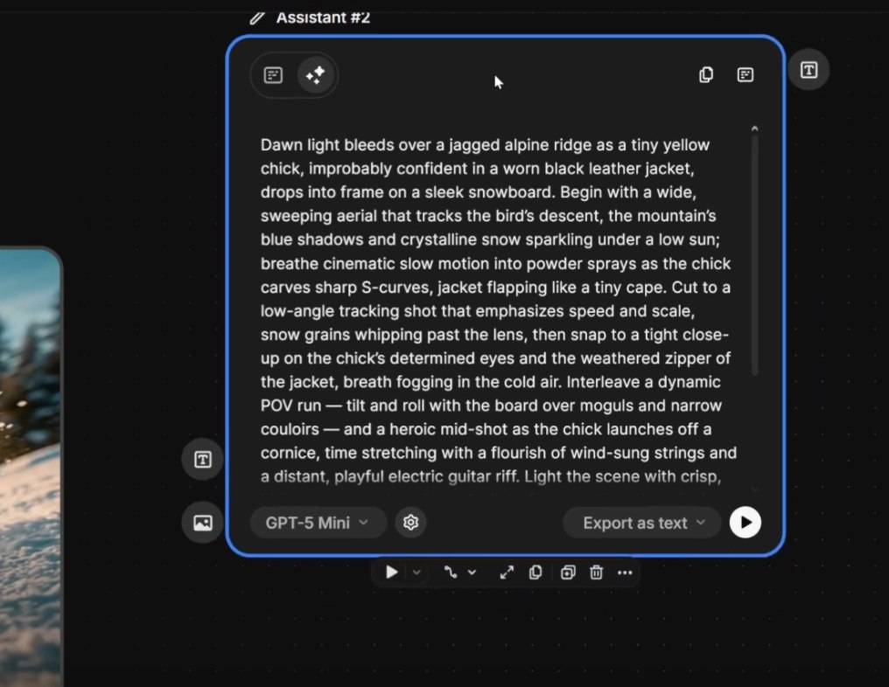

Image Generator Node no Spaces — painel completo: modelo Google Nano Banana, References (Style/Character), Prompt, aspect ratio 16:9, resolução 2K

Text Node com prompt elaborado — alimentando o Image Generator

Resultado final gerado — qualidade cinematográfica 2K
🎨 Modelos Disponíveis em Abril 2026
Em Abril de 2026, o Freepik oferece acesso a 8+ modelos de geração de imagem, cada um com características distintas. Escolher o modelo correto é a decisão mais importante antes de qualquer geração.
Mystic 2.5
Especialista em retratos fotorrealistas e rostos humanos detalhados.
Melhor para: personagensFlux 2 Pro / Max
Qualidade máxima geral. O modelo mais versátil para cenas cinematográficas.
Melhor para: qualidade geralGoogle Imagen 4
Cenas cinematográficas com iluminação natural e composição realista.
Melhor para: cenas externasNano Banana Pro
Consistência excepcional de personagem. Ideal para pipelines com Character Reference.
Melhor para: consistênciaSeedream 4.5
Estilo artístico e anime. Ótimo para produções com estética não-realista.
Melhor para: estilo artísticoIdeogram
O único modelo que renderiza texto legível em imagens com consistência.
Melhor para: texto em imagem💡 Regra de Ouro
Para filmes: use Nano Banana Pro quando personagens precisam aparecer em múltiplas cenas (consistência máxima), Flux 2 Max para cenas sem personagem principal (paisagens, cenários), e Mystic 2.5 para close-ups de rosto que serão frame de Lip Sync.
⚙️ Parâmetros Essenciais
Os parâmetros de saída definem o formato, a resolução e a quantidade de variações geradas. Configurá-los corretamente antes de gerar evita retrabalho de recorte e perda de qualidade.
📐 Aspect Ratio por Destino
🔍 Resolução Recomendada
- HD (1280x720) — Rascunhos e aprovações rápidas. Economiza créditos.
- 2K (2048x1152) — Produção padrão para web. Melhor equilíbrio qualidade/crédito.
- 4K (3840x2160) — Produção premium ou frames que serão upscalados depois. Custa mais créditos.
🖊️ Editor de Prompts
O editor de prompts integrado expande e enriquece prompts simples automaticamente, adicionando descritores técnicos que os modelos entendem melhor — sem exigir que você seja um especialista em prompt engineering.
Text Node com prompt elaborado — o editor expandiu um prompt simples adicionando descritores de iluminação, composição e estilo
PROMPT SIMPLES (antes)
"homem correndo na chuva, cidade à noite"
PROMPT EXPANDIDO (depois)
"cinematic shot of a man running through heavy rain on a neon-lit urban street at night, dramatic side lighting, wet pavement reflections, shallow depth of field, anamorphic lens flares, photorealistic, 8K"
💡 Como Usar
Escreva sua ideia de forma simples → clique em "Enhance Prompt" → revise o prompt expandido → ajuste se necessário → gere. Sempre leia o prompt expandido antes de gerar para garantir que a intenção original foi preservada.
📸 References: Style e Character
O sistema de referências visuais é o recurso mais poderoso para garantir consistência visual em um filme. Existem dois tipos: Style Reference (estética) e Character Reference (identidade do personagem).

Node de referência configurado no Spaces — Style e Character Reference conectados ao Image Generator
🎨 Style Reference
Faz o modelo replicar a estética de uma imagem de referência: paleta de cores, tom de iluminação, textura e estilo visual.
Uso: cole qualquer imagem com a estética desejada. O modelo vai "entender" o estilo e aplicá-lo à cena gerada.
Slider: 0.3 = influência sutil, 0.7 = influência forte, 1.0 = cópia quase literal.
👤 Character Reference
Preserva a identidade de um personagem específico — rosto, traços, estrutura — em qualquer cena descrita no prompt.
Uso: selecione a imagem do personagem (ou o LoRA treinado) como referência. O personagem aparecerá na cena gerada.
Combinar: use Style + Character juntos para máxima consistência visual.
🔄 Variations
Gerar múltiplas variações do mesmo prompt com seeds diferentes é a estratégia mais eficiente para encontrar a melhor composição sem precisar reescrever o prompt.

Variação A — composição frontal

Variação B — composição lateral
🔄 Fluxo com Variations
- 1.Configure o prompt e os parâmetros desejados
- 2.Defina quantidade: 4 variações por geração
- 3.Avalie as 4 variações side-by-side
- 4.Selecione a melhor e salve o seed
- 5.Use o seed fixo para gerar variações refinadas da cena escolhida
🏆 Quando Usar Qual Modelo
A escolha do modelo é a variável de maior impacto no resultado final. Este guia de decisão rápida cobre os cenários mais comuns na produção de filmes com IA.

Pipeline completo no Spaces — diferentes modelos usados em paralelo para diferentes tipos de cena
Cena com personagem principal em close-up
Use: Mystic 2.5 com Character Reference. Melhor preservação de detalhes faciais para Lip Sync posterior.
Cena de ambiente / cenário sem personagem
Use: Flux 2 Max ou Google Imagen 4. Máxima qualidade de detalhes de ambiente.
Personagem em 20+ cenas diferentes
Use: Nano Banana Pro com LoRA treinado. Consistência máxima entre cenas é o ponto forte deste modelo.
Estética animada ou artística
Use: Seedream 4.5. Estilo artístico e anime com qualidade consistente.
Imagem que precisa incluir texto legível
Use: Ideogram. Único modelo que renderiza texto com consistência — placas, letreiros, títulos.
✅ Resumo do Módulo 2.2
Próximo Módulo:
2.3 — Gerador de Vídeo: Kling, Veo, Runway, Sora e prompts cinematográficos